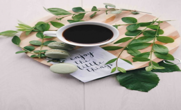

Many People are facing depression now-a-days the only reason is they are using excessive amount of electronoc devices from which the phone has become the daily dose of every person.It is essential as much as food we need to live. A study from the University of Arizona showed teens who were addicted to their smartphones also showed signs of depression.Aim to reduce the amount of total time you spend on your phone. Set a goal of only 30 minutes or an hour a day and see if you can work your way down from there. If this isn’t realistic because you use it for work, try shifting as much as you can to your laptop or desktop. If you're having trouble regulating yourself, there are plenty of tools available today that can set time limits on apps or block certain apps altogether. Some of these tools may already exist on your phone. Check out these timers available for Android and iPhone devices. Acknowledge when it's time to take a break Try to recognize when your mental health may be suffering after spending too much time on your phone. Do you notice your self-esteem drops after using a particular social media channel? Are you finding that you feel sad or angry after spending time on your phone? If the answer is yes, it's time to take a break. Set boundaries Identify times during the day when it is okay and not okay to use your phone. Setting these boundaries can help you make sure you're taking time to disconnect. For example: If you have a separate phone or email for work, set a time at the end of your day to shut them off. Not only will this help limit your screen time, it will also help you avoid burnout while working from home. Don't look at your phone during any meal. Take time to enjoy your food mindfully or have a conversation with someone. Stop using your phone at least 30 minutes before bedtime. If possible, leave it in another room while you sleep. Don't look at your phone first thing in the morning. Instead, find a few minutes for yourself and start your day fresh — drink a cup of tea, brew some coffee, do some stretches, exercise or meditate. Use your phone for good For all the negative talk about phones and technology, these devices come with plenty of positives, too. That same survey from Hopelab and Well Being Trust showed that teens and young adults often turn to the internet for help when they’re feeling depressed. The survey sampled more than 1300 U.S. teens and young adults. According to the survey results: 90% of respondents turned to the internet for help with depression, including researching mental health issues. 75% of respondents looked for other individual’s mental health stories through podcasts, blogs or videos. 38% of respondents used wellbeing mobile apps. 32% of respondents connected with health providers through text and video chat Some research has shown that teen phone use negatively affects sleep, which leads to depression and anxiety. The National Sleep Foundation recommends avoiding screen time at least 30 minutes before bed.
BLOG
Pour your heart

COFFEE BREAK
2 minutesWORK HARDER
2 minutesTHOUGHTGS RANDOM
2 minutes
Admin
January 14, 2021
2 Comments
Using Phone at any time, Is it the reason of depression?
Admin
January 16, 2021
7 Comments
Live Life Fullest
Have you ever felt like others don’t understand your pain when they seem to be living a happy life? You’re not alone in feeling this way, but the truth is that happiness takes work, and learning how to live life to the fullest takes dedication and practice. People who smile in public have been through every bit as much as people who cry, frown, and scream. They just simply found the courage and strength to smile through it and enjoy life in the best way possible. Life is short, and we only live once. Learning to live life to the fullest is an important step in making the most of every day.
Admin
January 19, 2021
5 Comments
Try to Choose Difficult Road
My theme today is “Difficult Roads Often Lead to Beautiful Destinations.” Now, I know that today’s thought is probably the last thing on your mind when you’re slogging through hard times. I get it. We’ve all been there, but if you were truthful with yourself, you’d have to admit that, more often than not, when you do come through the storm and land on the other side, it’s usually never as bad as you thought or expected it to be. And if it was a miserable experience, you can count yourself lucky to have survived. The truth is that many times in life and love, and family and friends the difficult road you find yourself traveling today, with all its frustration and pain and agony, will, in time, lead to a beautiful destination. We all go through hard times, and when my friends and clients tell me their woes in life, I am reminded of the quote I read years ago, Falling down is an accident; staying down is a choice. I love that thought because we all know that, sometimes, staying down is a whole lot easier than getting back up to fight another day. But we also know that staring at the floor isn’t going to get you very far in this life…so your responsibility is to get up and get going. In our time together I want to focus on some very basic truths that I have seen in my life’s works, which have given me the confidence to encourage you to fight through whatever it is that you’re going through. No matter what is going on in your life, trust me when I ask that you let the issue, whatever it is, run its course and then make a decision based on what you’ve learned. In the end, your choice that life will give you will be one of a few recognizable outcomes; most will deliver as a success or failure, but some will simply be an issue of not right now, meaning that, in time, the event you think you cannot abide, your idea, concept or relationship will find an ending. And be aware that, no matter what happens in the end, it will be alright, because no matter what road you choose, all difficult roads often lead to beautiful destinations.
Admin
January 21, 2021
12 Comments
Take a Coffee Break
Ah, the coffee break: a sanctioned 15-minute break during which you and your colleagues can step away from work, socialize, and sip a hot caffeinated beverage. But for some offices the coffee break has long been extinct. It’s a phenomenon they’re only vaguely aware of, having read about it once in a yellowed Dilbert comic strip. For these poor souls, the coffee break is the stuff of legend. At other workplaces, that’s not the case. In Europe, for instance, the coffee break is practically ubiquitous, though it might be called something different like tea time, morning tea, elevenses, or smoko. In fact, coffee breaks are a common workplace ritual the world over. In North America, though, whether or not your workplace allows coffee breaks depends on labor laws and the whim of your employer. Some offices are more lax: coffee breaks can happen multiple times a day, at any time, inside or outside the office. Interestingly, studies show that there are some benefits to the regularly scheduled coffee break. This article takes a look at some of those benefits because, well, we just really love coffee here at Jostle. So go grab a coffee and let’s get started.